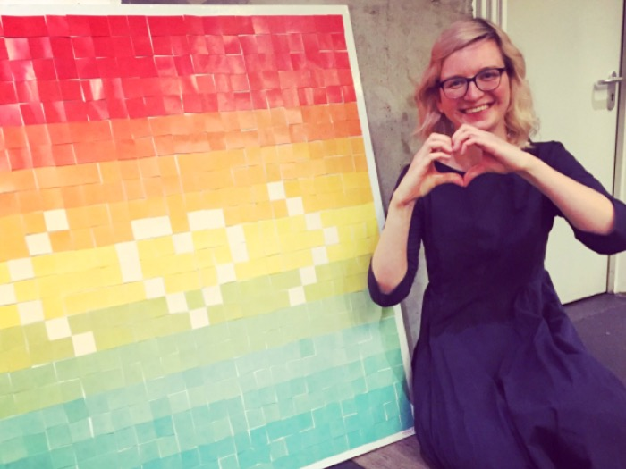

#operations #support #projects #marketing #pr #community #design #video
Core organizer at
Rails Girls Summer of Code
Rails Girls Summer of Code is a 3 months global scholarship that sponsors women to contribute full-time to Open Source Projects with the help of coaches and mentors. Since 2013, RGSoC has trained 145 students, raised more than 450.000 USD and created a community of over 800 students, coaches, mentors, supervisors and organizers.
My main areas of responsibility were operations, support, marketing, pr and multimedia design.
Aditionally, it was common to participate in other tasks, like testing the RGSoC Teams App or being part of the Selection Committee.
OPERATIONS AND SUPPORT
Remote community support in several timezones and platforms (students and sponsors)
Creation of guides for various purposes both internal and external
Optimization and automation of processes
Documentation on several platforms, including GitHub
MARKETING AND PR
Managing social media accounts
(in 2016 impressions increased 4x on twitter and 10x on facebook)
Crafting content fundraising campaign
Copywriting for blog posts and newsletters
Creation of the new Press Page, press releases and other content
MULTIMEDIA DESIGN
Creation of images, infographics, gifs and video
Updating the website and restyling some of the pages
Making blog posts using markdown, HTML and CSS
Newsletters design on MailChimp
A small note...
More than everything, I loved working for RGSoC. It was an absolute pleasure working with this incredible team and having such a powerful purpose behind everything was pure inspiration.
I believe that the "people first" philosophy of the organization and the focus it has on being inclusive created this welcoming environment which allowed ideas to flourish and to be turned into reality. In the end, it didn't matter if the team was remote and working from different timezones: we kicked-ass!
Connecting
RGSoC's community
and #diversifytech
case study
RGSoC's was going onto its 4th edition and the challenge was how to keep growing along with the community, making sure everyone was actively involved.
The result was an ever present community throughout the whole program, a rise on the number of applications and a crowdfunding campaign which sponsored 16 teams. The website's KPIs improved and our social media indicators skyrocketed!
THE CHALLENGE
OVERVIEW
RGSoC is intrinsically connected to its community. Each and every person who is part of the program is at least one of the following: student, coach, mentor (aka project maintainer), supervisor, donor and organizer.
This means that RGSoC's work is dependent on the support of the community at all levels. And if RGSoC wants to grow, the community has to grow with it and be actively engaged.
After 3 editions people and especially sponsors and individual donors might get fatigued or invest their money in another place. We needed to make sure everyone knew how important their support was for the program and the impact they had on the student's career advancements and in diversifying tech.
Just like any other organization formed by volunteers, RGSoC's team didn't have enough time to focus on social media and creating content. This was harming their reach and interactions on social networks, the number of visits to the website and preventing them to get to a bigger audience of students, coaches, project maintainers, sponsors and individual donors.
The good news: RGSoC's community is awesome! RGSoC has one thing that many organizations wish they had: a supportive community that believes in them and in what they do. This could exponentiate the results of our efforts if we, for instance, improved the content on social media.
OUR GOALS
Increase the awareness of our announcements regarding the several stages of the program and consequently raise the number of student applications, project submissions and fund as many teams as possible
Diversify social media content, boost engagement and improve brand awareness, but more importantly, improve the communication between students, coaches and mentors.
Drive traffic to our website and improve the content on some of the pages, particularly Guides, Crowdfunding Campaign and Press
Coordinate all operations, marketing and support related to students and sponsors.
And an extra adventure: supervise one of the selected teams
APPROACH
SOCIAL MEDIA REBOOT
When I joined RGSoC, the team mentioned that they would like to improve our marketing and communications. I couldn't agree more! RGSoC is such a fantastic project that I believe it would benefit everyone to know more about it.
Looking at Twitter and Facebook, I realised that there was room for an improvement regarding the number of followers and he posts' engagement KPIs. Facebook was particularly underused, as the types of posts were mostly links and Facebook works best with a bigger variety of content, especially images and videos.
Even though I was present when we launched the crowdfunding campaign, I was only able to focus on social media when we launched the "Extra Week for Projects Submission" and "Applications are Open" campaigns. I followed up later on the crowdfunding campaign as you will see on the next section.
In terms of marketing and communication, each announcement requires multiple social media publications complemented with newsletters, blog posts and direct emails. These annoucements had to get to as many people as we could, so I really wanted to do different types of posts.

Gif used on the 2016's "Applications Are Open" campaign.

Celebrating our record breaking number of applications.
"Extra Week for Project Submissions" gif featuring my cat.
"How can we make a big announcement bigger? What do our fans like to share? What have they been talking about and how can I play with that? What makes this more fun and surprising? What makes this feel more authentic? How can I translate the culture of the organization into this announcement?"
"Well, everyone loves gifs, why don't we just make our gifs?" And that's how I ended up in one gif and my cats as well. The first one on the left was published a day after this one. This idea came to me after receiving so many emails and messages about when the applications would be open that it just felt like we were in a running competition before we hear "Ready, Set, Go!".
Besides making a lot of gifs, I worked on some images and quick tutorials to post on twitter and facebook. I also adapted them to other dimensions to be used on blog posts and newsletters. Meanwhile the organization won a Ruby Hero Award and of course we had to publish that!
"How to find a pair to apply for RGSoC" mini tutorial.

A printscreen of our newsletter about the Projects Submission phase.
A collage for the blog post about the Ruby Hero Award.
At a certain point, our social media design got influenced by the crowdfunding campaign design, especially the colors. People responded very well to it and after one of our designers started to use it on the alumna blog posts, everyone agreed on making this change. The most amazing part is that there might be an important announcement about this...

A picture of the thank you board used to announce the Kick Off of RGSoC 2016.
RGSoC Class of 2016 Map of the students' locations.
RGSoC's 2017 Projects Submission phase gif (I know it's not about 2016 edition but it's one of my favourites!).
Throughout the whole program we were careful to reply to all tweets and DMs on Twitter and the samme applied to Facebook. Social Media is not just about making pretty posts nor to be speaking all the time, Social Media is a poweful tool to listen and understand what our community wants.
Social Media is also an incredible place to tell stories, and what better stories than our student's stories? Every time there was a worldwide event like the "Kick Off Party" or the "Day Off" I would collect everyone's tweets and add them to facebook albums and twitter moments.
I also gathered a selection of posts, from special events to everyday achievements and other moments the students and the rest of the community wanted to share with us. The result was the RGSoC 2016 Moments album and it was one of our top 10 posts in terms of engagement.
One of RGSoC's main goals is to tell the stories of the students in order to inspire more women and non binary people to come to tech and open source. As the RGSoC 2016 was wrapping up, I wanted to honor that and put together a film of the 2016's program, with some infographics, pictures of everyone's involved, sponsors logos and even the thank you board. tiny stories are part of a bigger storyn
RGSoC 2016's Wrap Up Video!
We broke the record of the number of applications registered: 92! We were able to increase our impressions by 400% on Twitter. Meanwhile our Facebook page surpassed all expectations and our reach and interactions rose 10x. These are just numbers that just reflect a community that was actively involved in making RGSoC thrive and #diversifytech!
RGSOC 2016's CAMPAIGN
In February 2016, the team published the first post for the fundraising campaign. It was inspired on the previous year's campaign and after the initial posts we also translated and published our annoucement in over 20 languages with the help of the community.
Weeks later, we decided to re-activate the campaign in order to reach our goal of funding 12 teams. After some thought, I believed that we could go beyond on this campaign: we could gather in one place everyone who is part of RGSoC, — students, coaches, mentors, donors and sponsors, — we could show them that their support had an impact in the community and most of all, we wanted to thank them in a genuine and heartfelt manner for their support.
And this was how the RGSoC's Thank You Board and the #diversifytech campaign were born.
RGSoC's Thank You Board "under construction" for the 2016's crowdfunding campaign (TY = "Thank You" in internet slang).
I started by designing the board on Illustrator, the content of each square and the coordinate with a syntax that was similar to Rails sintax: thank_you(xx,yy). Inspired by Anika Lindter's talk — one of the RGSoC's founders — I decided to include some stats regarding the current state of the art of diversity in tech and show how we all could change it.
The board would start covered in light grey squares representing all the people who have "coding superpowers" but didn't have the opportunity yet to code. The "</>" symbol in blue, red and yellow squares represented the percentage of men, women and non-binary people in tech.
As the board evolved the "/" would be replaced with our logo, simbolizing the transformation from "divisiveness" to "inclusiveness". At the same time the squares would be turned into a beautiful scheme of summery colors, like a rainbow, representing the growth of a diverse tech community, a community that welcomes everyone, independently of their gender, color of skin, religion and so on.
The board and its 625 squares. The coordinates followed the Ruby on Rails syntax: thank_you(xx,yy).
The beginning of the thank you board with "</>" symbol representing the tech community and the percentages of men, women and non-binary people.

The board with all the colorful squares placed representing an inclusive, diverse and welcoming tech community.
I went to Leroy Merlin to buy a 1x1 meters wood board and printed a huge vinyl to stick on top of it. I also printed over 1500 squares just in case. I was ready to start the transformation!
The rules were: for each individual donation, I would write a thank you note for that person with the coordinates where the square was going to be placed. Then, I would take a picture of the card and send it via Twitter. At the same time I would take a picture of the whole board with the new square to add to the stop motion video.
A close up of the Thank You Board.
Me adding colorful squares to the board.
Me writing "Thank You Sven Fuchs :) " as I did to the rest of the over 600 squares.
The same applied to sponsors, but instead of a single square I would give them a group of squares depending on the sponsorship package. For the partners and platinum sponsors I would do special gifs. And square after square, picture after picture, the intro video for the #diversifytech campaign was made.
The intro video for the RGSoC's #diversifytech Campaign where we introduced the board.
During the following months, I played even more with the stop motion videos, turning them into gifs or even for some companies I would play with their squares and tweet them. Even my cat misplacing a square was a good opportunity to make more gifs!

Buffer is in RGSoC's Thank You Board.

One of our individual donors helped complete a line, so she deserved a gif too!
Digital Ocean's thank you gif.
I carried the completion of the board until the kick off of the summer of code, July 1st. On the top three layers that were red, I put the name of the teams and took a picture that I used on social media, the newsletter and blog post. The crowdfunding campaign was over and the summer of code began!

The Thank You Board Stop Motion from beginning to end!

RGSoC's Thank You Board with the names of the teams on the top 3 rows, the RGSoC's red rows.

Me celebrating when the board was complemented. And then I had to pick up all of those squares.
The results in terms of engagement and feedback were astounding! People and companies would tweet back, retweet and ask their friends to donate. In May, our impressions on Twitter went over 3500% relatively to the previous year. Facebook didn't have as much alterations because this campaign was solely focused on Twitter.
Our initial goal to raise enough money for 14 teams was accomplished and we were even able to fund another two teams. Unfortunately, the amount we raised was 9% less and the number of sponsors decreased 6% regarding the 2015's edition. However we hope that the conection we created and the growth we had in terms of social media will help us get more funding on the following year.
Some of the replies and retweets we got during the #diversifytech campaign.
The Thank You Board was built to get everyone together, and because Berlin is the place where RGSoC was founded, I thought that the best way to wrap up this year's edition was to send it back to Berlin where one of the wrap up parties was organized. It was amazing to see their tweets and pictures when they saw the board.

Anika Lindtner, one of the founders of RGSoC next to the Thank You Board.

A bit of the crew at the wrap up party. Time for the #FridayNightHug picture!
Anika talking about the program and someone very strong holding the board for a considerable amount of time!
Like I mentioned before, the impact of this board was felt beyond this campaign, tweets and party. Everyone really liked the colours, so the organization started using them for the alumna interviews and after a while I adapted the colors for other RGSoC posts like this one. And soon there will be even more news about this too, but for now I really can't talk about it!
SUPPORT AND OPERATIONS
I believe that good marketing is not just about ads, pr and social media. Every time a person interacts with your brand is an opportunity to create a connection with the brand. Support and Operations are two areas where we can go beyond the work done on other channels, creating customer loyalty and more value to the people who are using or products or services.
I was in charge of students' and sponsors' support during the program. My tasks would vary from replying to messages on slack, emails on helpscout and messages on social media. I would reply to any message as soon as possible and try to provide value in the work I did.
Besides all of this, I am a fan of automatizing repetitive tasks and I have standardized guides for sponsors, documents and proposed a lot of changes to improve the workflow. I also wrote some guides on our GitHub private repo so that the work would be passed without issues.
Gif used on the campaigns during the RGSoC 2016 and 2017 editions: "Applications Are Open" (yes, I didn't have a lot of furniture in my living room at that time!), "Applications Are Closed" (we broke a new record and I just created this gif in 20 minutes to celebrate) and "Project Submissions are Open" 2017 (we needed to make more clear that we accepted OSS Projects in all programming languages).
BUILDING A PRESS PAGE
RGSoC had build a press page in 2013, however it hadn't been updated and the team decided to remove it from the website. In 2016 we decided to redesign it, create press releases and organize the content into new sections. These sections had links to press releases ready to be downloaded and media, such as logos, images and videos.

BONUS: BEING A SUPERVISOR
A very interesting thing that happened with this board is that people really liked the colours. They started using them for the alumna interviews and after a while I adapted the colors of my posts. And soon there will be even more news about this too!
Gif used on the campaigns during the RGSoC 2016 and 2017 editions: "Applications Are Open" (yes, I didn't have a lot of furniture in my living room at that time!), "Applications Are Closed" (we broke a new record and I just created this gif in 20 minutes to celebrate) and "Project Submissions are Open" 2017 (we needed to make more clear that we accepted OSS Projects in all programming languages).
OUTCOME
Regarding Twitter, I am happy to say that in less than a year, RGSoC's account increased its impressions by 400%. In May of 2016, the impressions broke all the records, reaching 37 times the impressions of May from the previous year. This was due to the Thank You Board Crowdfunding Campaign that I'll go through later in this section.
Overall the number of followers went up by 150%, while the number of tweets increased 163%.
On Facebook, if we compare 2015 and 2016, the post engagement was up 10 times and the number of followers rose over 2 times. While the top posts on Twitter were related to the Thank You Board Crowdfunding Campaign, the top posts on Facebook were related with the launch of the applications, alumna interviews, albums of events during the program and useful tips for the summer of code.
WHAT THEY SAY
I met Ana Sofia Pinho through a common acquaintance who was a student and volunteer of our summer program Rails Girls Summer of Code. Throughout her work for RGSoC from March 1st to September 30th 2016, I had the opportunity to work closely with her as part of the team I managed. As part of her work responsibilities, Ana was in charge of marketing and PR as well as primary communication (customer support) with our students and sponsors.
Ana is a very creative and hands-on person. In her time as a team member of RGSoC, she created beautiful targeted content for our audience and was incredibly helpful and empathetic to everyone she communicated with, including students and sponsors. She loves helping people and always goes the extra mile to do so. She is able to work independently, and brings enthusiasm and dedication to her work.
I recommend Ana for a position in marketing, customer support, or anything that involves creativity and/or customer interaction.
Laura Gaetano, Core Organizer of RGSoC
MORE SELECTED WORK
or back to the HOMEPAGE
Rails Girls Summer of Code
Orangeboom
#projects #operations #marketing #webdesign #design #merchandising
Geekettes
#community #operations #support #projects #events #pr #marketing #design #webdesign #video
Change !t
#marketing #community #webdesign #design #video #community #support
Bosch Termotecnologia Portugal
#project #lean #operations #design